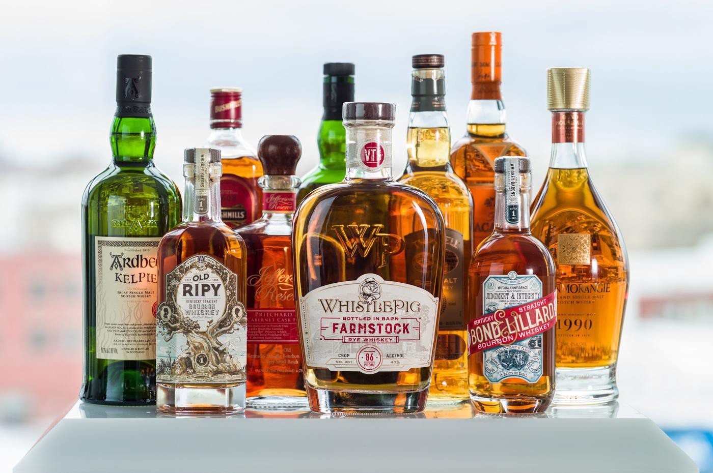
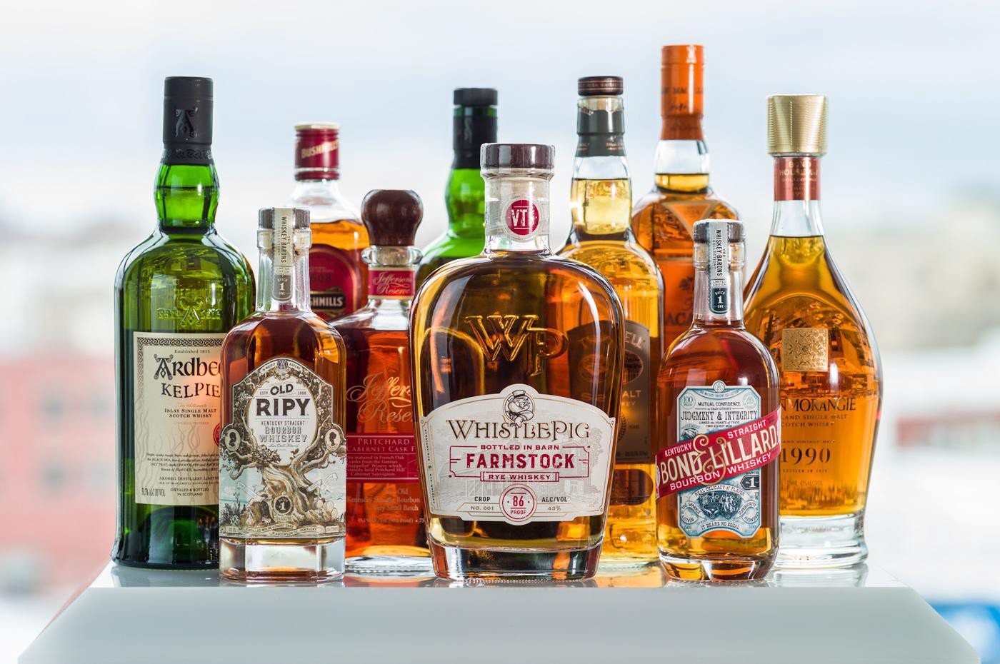

These are some of the projects I've worked on(Images are going to be links to my projects.)
Whiskey - K-Means Clustering
Will add new updated projects for the rest as I complete them
Project 4
Whiskey - K-Means Clustering
Will add new updated projects for the rest as I complete them
Project 4
Project 5
Project 7
Project 8
Project 9